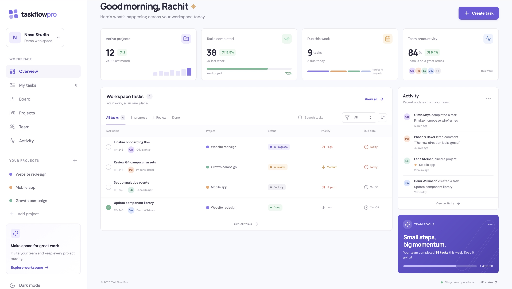
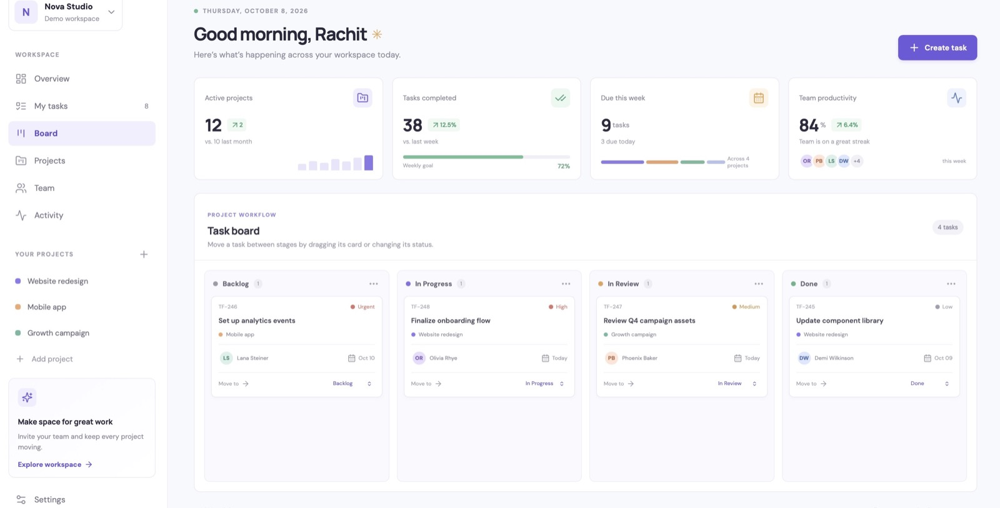

WORKSPACES / BOARDS / COLLABORATIONTaskFlow ProFlagship · Full-stack project management
TaskFlow Pro
A workspace-based project management app for organizing teams, projects, and Kanban tasks.
ReactNode.jsExpressMongoDB
Explore case study

Problem and approach
Teams need a shared place to plan work while keeping workspace membership and project activity scoped. TaskFlow combines workspace roles with project boards, task assignment, comments, attachments, notifications, and activity history.
Architecture
- React + ViteWorkspace and board UI
- Express APIAuth, roles, project and task requests
- MongoDBWorkspace and project data
Quality and demo
- The repository README documents local setup, environment variables, architecture, and the API health route. Its root package manifest does not list an automated test command.
- Open the public demo to browse the sample workspace. Sign in to save changes.